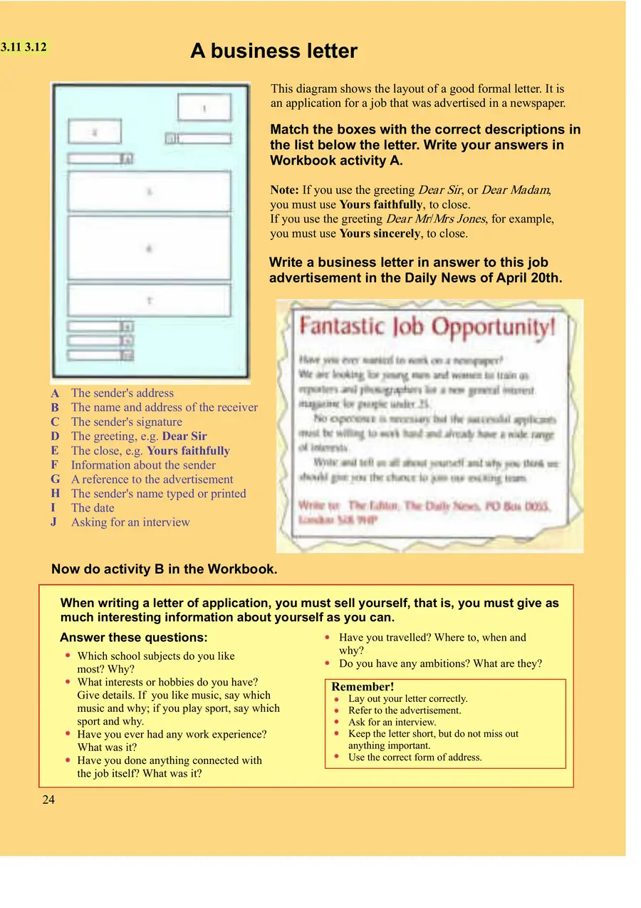

3.11 3.12 A business letter This diagram shows the layout of a good formal letter. It is an application for a job that was advertised in a newspaper. Match the boxes with the correct descriptions in the list below the letter. Write your answers in Workbook activity A. Note: If you use the greeting Dear Sir , or Dear Madam, you must use Yours faithfully, to close. If you use the greeting Dear Mr /Mrs Jones, for example, you must use Yours sincerely, to close. A The sender's address B The name and address of the receiver C The sender's signature D The greeting, e.g. Dear Sir E The close, e.g. Yours faithfully F Information about the sender G A reference to the advertisement H The sender's name typed or printed I The date J Asking for an interview Now do activity B in the Workbook.
Dear Sir , ومسافة بعد Mr في Dear Mr /Mrs Jones، وحُفظتا حرفياً.[
{
"letter": "1",
"word": "Box 1 (top-right corner)",
"ar": "أعلى اليمين",
"answer": "A"
},
{
"letter": "2",
"word": "Box 2 (upper-left below box 1)",
"ar": "أعلى اليسار",
"answer": "B"
},
{
"letter": "3",
"word": "Box 3 (right, below sender's address)",
"ar": "يميناً أسفل 1",
"answer": "I"
},
{
"letter": "4",
"word": "Box 4 (left, below receiver's address)",
"ar": "يساراً أسفل 2",
"answer": "D"
},
{
"letter": "5",
"word": "Box 5 (first body paragraph)",
"ar": "الفقرة الأولى",
"answer": "G"
},
{
"letter": "6",
"word": "Box 6 (middle body paragraph)",
"ar": "الفقرة الرئيسية الثانية",
"answer": "F"
},
{
"letter": "7",
"word": "Box 7 (third body paragraph)",
"ar": "الفقرة الثالثة",
"answer": "J"
},
{
"letter": "8",
"word": "Box 8 (first closing line on bottom-left)",
"ar": "السطر الختامي الأول",
"answer": "E"
},
{
"letter": "9",
"word": "Box 9 (space below close)",
"ar": "أسفل الختام",
"answer": "C"
},
{
"letter": "10",
"word": "Box 10 (bottom line)",
"ar": "السطر الأخير",
"answer": "H"
}
][
{
"num": 1,
"prompt": "1 design (of a text): ______",
"answers": [
"layout"
]
},
{
"num": 2,
"prompt": "2 business-like, not friendly: ______",
"answers": [
"formal"
]
},
{
"num": 3,
"prompt": "3 the name of the first words used when meeting or writing to someone: ______",
"answers": [
"greeting"
]
},
{
"num": 4,
"prompt": "4 a way of talking politely to a man: ______",
"answers": [
"Sir"
]
},
{
"num": 5,
"prompt": "5 a way of talking politely to a woman: ______",
"answers": [
"Madam"
]
},
{
"num": 6,
"prompt": "6 one phrase to end a letter: ______ (or Yours sincerely)",
"answers": [
"Yours faithfully",
"Yours sincerely"
]
}
]{
"pb_text_vs_image": "رُوجع مخطط الرسالة في PB ص 24 بدقة 600 DPI (p26_600-26.png وشرائح pb24_lb_34.png وpb24_lb_8910.png) للتأكد من أرقام المربعات 1–10 ومطابقتها للأوصاف A–J، وحُفظت الصيغ المطبوعة 'Dear Sir ,' و'Dear Mr /Mrs Jones'.",
"wb_ocr_vs_image": "طُوبقت 3.11 A وB في WB ص 40 مع صورة wb-041.png وصُحّحت رموز المربعات الفارغة ('Od > 3 + [1 s [' ← أرقام المربعات 1–10) وقراءة OCR لكلمة 'away' ← 'a way'."
}